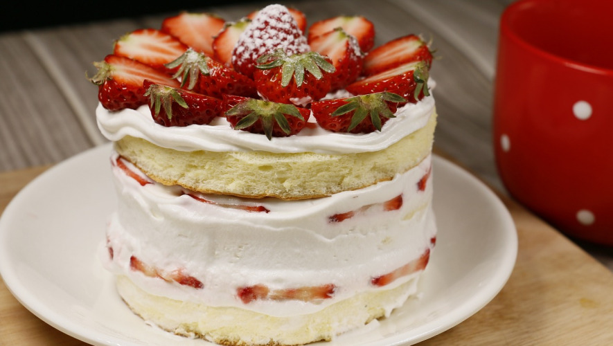
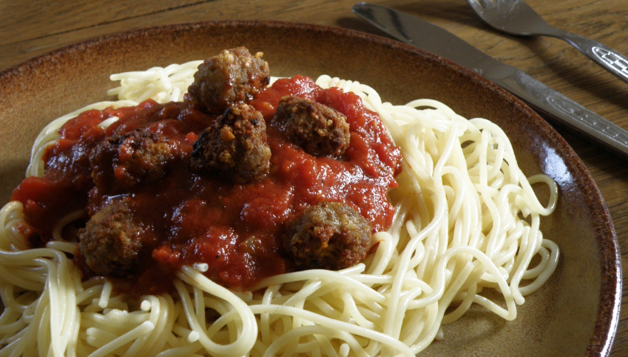
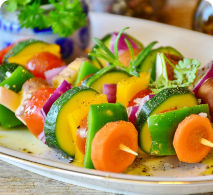
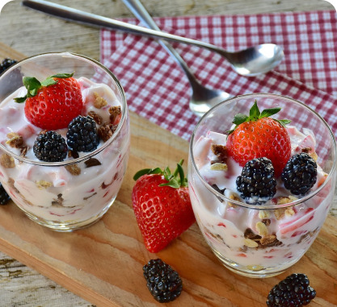
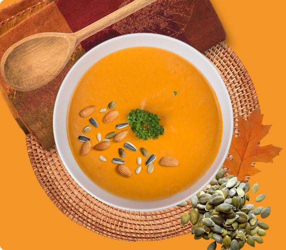
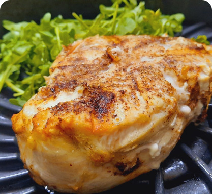

-

草莓鮮奶油蛋糕
材料
Tommy's雪紡蛋糕粉 110g 雞蛋 125g 水 15g 沙拉油 25g 植物性鮮奶油 150g 草莓 適量 -

番茄雞肉丸義大利麵
材料
番茄 2顆 洋蔥 1顆 蒜瓣 8瓣 雞胸肉 300g 雞蛋 1顆 鹽 3匙 蕃茄糊 400克 義大利麵 1把 -

番茄蔬菜溫沙拉(氣炸烤箱)
材料
櫛瓜 1條 番茄 1顆 紅椒 1顆 黃椒 1顆 玉米筍 1盒 橄欖油 1大匙 黑胡椒粉 1小匙 鹽巴 1小匙 -

原味水果優格(水波爐料理)
材料
鮮奶 300 cc 原味優格 100 cc 火龍果 半粒 芒果 1粒 芒果 2粒 小藍莓 20顆 -

南瓜濃湯
材料
南瓜 560克 馬鈴薯 160克 洋蔥 110克 無鹽奶油 24克 水 1000克 蒜頭 4瓣 蛋 1顆 黑胡椒粒 適量 鮮奶油 60克 蜂蜜 2匙 鹽巴 1匙 -

胡蘿蔔頻果米糊
材料
頻果 1/4顆 胡蘿蔔 數片 米 1/4杯 -

舒肥雞胸(電鍋版)
材料
雞胸肉 4片 白胡椒粉 1匙 黑胡椒粒 1匙 七味唐辛子 1匙 鹽 1匙 義式香料 1匙 -

冬粉海鮮湯
材料
冬粉 1~2把 番茄 1顆 蛤仔 10顆左右 蝦子 4隻 雞蛋 1個 胡椒粉 適量 紅蔥油 一大匙 鹽 一點點